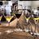

mariazkMember since February 2013 FromAthens, GR AboutI am a Sommelier, currently living in Athens! Wine is my passion. I'm hungry for any type of wine knowledge and off course thirsty for good wine! I love meeting the artisans behind the bottles I enjoy! |
|  |
mariazk reviewed Saint Clair Pinot Noir Marlborough Ure Valley 2011 on February 3, 2013 The colour was vibrant and clear; red ruby with light violet highlights. After swirling gently, many evenly placed and slow dripping tears appeared. |
|
mariazk reviewed Ferrer Bobet Priorat 2006 on February 2, 2013 Dark red cherry colour,concentrated almost opaque with an abydance of slow moving tears.Very lively for its age. |